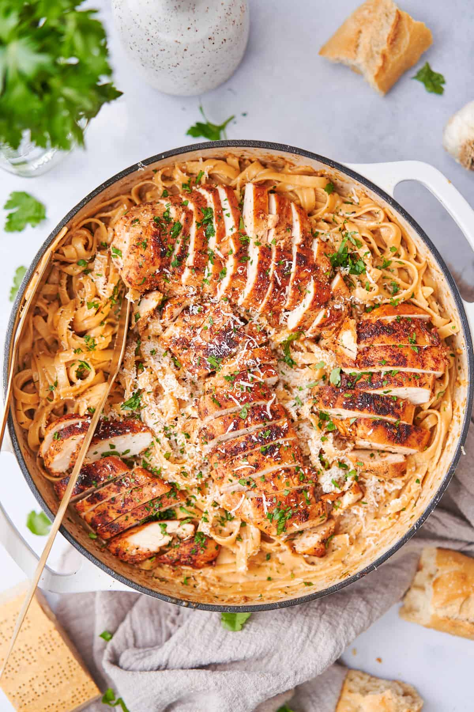

Cajun Chicken Alfredo

Description: A delicious, easy, and filling dish of cajun chicken alfredo that feeds the whole family!
Ingredients:
- Boneless skinless chicken breast
- Cajun seasoning
- Unsalted butter
- Fresh garlic
- Chicken broth or chicken stock
- Heavy whipping cream
- Parmesan cheese - Freshly grated
- Pasta - Fettuccine or linguine
- Pasta water
- Parsley - Optional, for garnish
Steps:
- Dry chicken breasts off with paper towels
- Mince garlic
- Grate parmesan cheese
- Preheat a large skillet over medium heat
- Cook the pasta for just a few minutes under the package instructions until it's al dente (be sure to save 1 cup of pasta water to thin the sauce)
- Measure out all remaining ingredients
- Season the chicken liberally with cajun seasoning blend and kosher salt
- Add 2 Tablespoons of butter to hot skillet. Add Chicken and sear on all sides over medium-high heat, until internal temperature is 165 degrees F
- Remove chicken and slice into pieces. Don't drain any drippings from the skillet
- Reduce the heat and add remaining butter. Add splash of chicken broth and minced garlic to skillet.
- Cook until flagrant
- Reduce to low heat. Add heavy cream
- Stir in parmesan cheese slowly, adding in small handfuls, stirring to melt before adding the next handful
- Season with the remaining cajun seasoning, and salt to taste
- Add the cooked pasta, and a little bit of pasta water, along with parsley.
- Toss to combine, adding more pasta water until the sauce clings to the noodles.
- Add the chicken pieces back over top, sprinkle with more parsley and freshly grated parmesan.